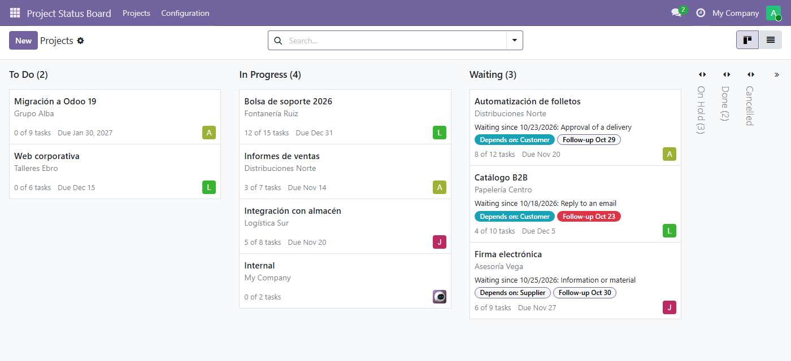
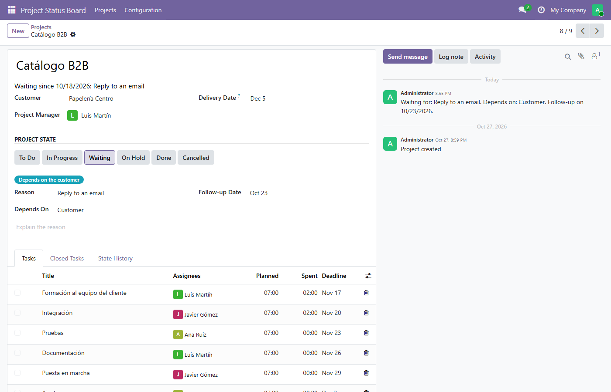
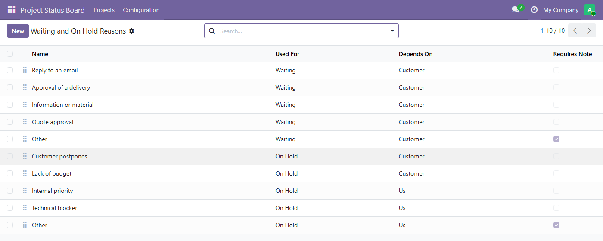

Project's stages tell you where a project is, not why it is stuck. Project Status Board turns them into a board of states and asks for the missing piece the moment a project stops: what it is waiting for, who it depends on and when to chase it again.

A project that stops is either Waiting (something close, to be chased) or On Hold (a long, agreed pause). Each one asks for a reason from a short list, not a free-text excuse.
The customer, a supplier or us. Projects waiting on the customer are highlighted, so a "waiting for the customer since the 12th" is documented instead of remembered.
Waiting projects carry a follow-up date that turns red once it has passed. Projects on hold carry their restart date in a folded column, so long pauses stay out of the way.


Ten reasons come out of the box, from Reply to an email to Lack of budget. Rename them, add your own, reorder them. Each one proposes who the project depends on, and catch-all reasons such as Other require a note.
The columns are Project's own stages and the to-do list is Project's own tasks. Nothing is copied into a parallel model, and the Project app keeps working exactly as before. No dependency on Enterprise modules.
Questions and bug reports: support@cimalor.com. We aim to reply within 48 to 72 business hours. You can also open an issue at github.com/cimalor-apps/addons, but the reply time above applies to email only.
Project Status Board is free software under the LGPL-3 license. Made by Cimalor.